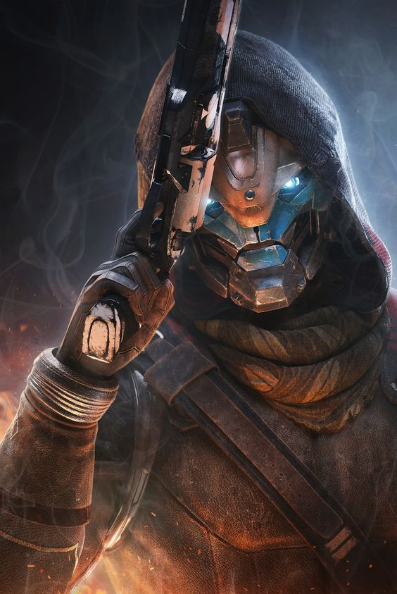

Excerpt from Stephen King's The Gunslinger:
"I do not aim with my hand; he who aims with his hand has forgotten the face of his father.
I aim with my eye.
I do not shoot with my hand; he who shoots with his hand has forgotten the face of his father.
I shoot with my mind.
I do not kill with my gun; he who kills with his gun has forgotten the face of his father.
I kill with my heart."

"Folding was never an option" -Cayde-6, Destiny 2
Light Bearer
In his early days as a guardian, Cayde made a name for himself as a daring and adventurer full of wanderlust. His life pre-Vanguard
had its fair share of reckless abandon and travel outside the tower. This is proven by the myriad of caches he hid throughout the system
While searching for a hive shrine on the moon, Cayde encountered a massive swarm of hive. Making a swift retreat to the surface,
he faced down the endless waves of Thrall and Knights until his machine gun ran empty. While taking cover, he spotted a Baroness from the House of Exile
fighting the Hive as well. The Hunter and the Fallen made an unlikely alliance and battled the horde side-by-side. As the enemies numbers dwindled,
so did the last of Caydes ammo. He noticed the Baroness was badly wounded. She threw him her Shock Pistol and attacked him, forcing him to finish her off.
Using her weapon, Cayde slayed the Wizard and remaining Thrall. He often wondered after that if the Baroness had attacked him to make his decision to kill her easier.
Previous Life
Like many guardians, Cayde is haunted by shadow of his previous life. When he was brought back by his Ghost, Sundance, all he had with him was
a journal containing Ace's name. The memories, or lack of, his son 'Ace', and Ace's mother, the 'Queen of Hearts', drove Cayde
to search for answers in the Vault of Glass. A timeless realm the Vex used in the endless simulations. While he never recovered all the memories
of his past life, he kept writing Ace and his Queen his journal, preserving their memory beyond his eventual resets.
Before he became an Exo, Cayde was a human soldier. He was approached by Clovis Bray to join the Exo program and remove his
debt by joining the Exo program. After becoming in Exo, he lived in a colony on Europa working for Bray Exoscience. At one ponit he was assigned
as security for a woman named Dr. Maya Sunderesh. It is speculated that the Queen of Hearts he refers to in his journal is actually Dr. Sunderesh,
and not Aces mother. He beheld The Collapse, as he retained memories through his resets of a destroyed world. Possibly the memory of his death.
The Dare
The story of Cayde-6 and the Hunter Vanguard position is a compelling piece of Destiny 2 lore, blending camaraderie, rivalry, and tragic loss. The Hunter Vanguard Dare exemplifies the daring and rebellious nature of Hunters in the Destiny universe, who live by a code of honor that is defined by their actions and personal relationships rather than formal authority.
Cayde's relationship with Andal Brask, in particular, adds depth to the Hunter Vanguard mantle. The tragic events surrounding Andal’s death, at the hands of Taniks the Scarred, set the stage for Cayde's eventual acceptance of the Vanguard role, even though he initially seemed reluctant to be tied down by such responsibility. The bond they shared and the wager they made reflects the close-knit yet competitive nature of Hunters.
The Dare also serves as a means for Hunters to avoid the formal selection process that other Vanguard classes (Warlocks and Titans) might adhere to. Instead, they rely on the outcome of risky bets and confrontations, making it both a literal and symbolic passing of the torch.
Cayde's ultimate fate in Destiny 2: Forsaken added a poignant layer to this dynamic, as his own Dare left his position open for another Hunter to take up. However, as of now, no new Hunter Vanguard has been officially appointed, leaving the future of that role uncertain.
The ongoing question of who will take up the mantle and whether the Vanguard Dare will continue to shape the legacy of Hunter leaders adds an element of mystery to the narrative.
Hunter Vanguard
As the Hunter Vanguard, Cayde found as many excuses as he could to escape his duties; and he was notorious for showing up in the nick of time. Despite his habits and longing
for the field, he became close friends with the two other Vanguard, Zavala and Ikora. In his last testaments, Cayde-6 remarked, "the Vanguard was the best bet I ever lost".
Joining the Vanguard during the City Age, he was crucial to the Tower defense and scouting throughout the system. Cayde held a pivotal role in the Taken War by helping the Guardian
sneak abord The Dreadnought and kill Oryx, The Taken King. During the Red War, Cayde fiercely defended the Last City from the Red Legion, even after the loss of his light. After escaping to Nessus then
reuniting with the Guardian and the other Vanguard, they retook the Last City from the Cabal.
Last Stand
Cayde-6, alongside the Guardian, traveled to the Reef to help Petra Venj quell a breakout from the Prison of Elders. After helping restore security, Cayde pursued the escaping Scorn Barons
but was ambushed by them. During the fight, Pirrha, the Rifleman, destroyed Cayde’s Ghost, leaving him vulnerable to death. In a last stand worthy of only the truest Gunslingers, Cayde fought defiantly but was overpowered
and confronted by Uldren Sov, who fatally shot him with Cayde’s own weapon, the Ace of Spades. Before dying, Cayde taunted Uldren and asked the Guardian not to blame themselves for his death.
His final words to the Guardian were to relay messages to Ikora and Zavala, marking the end of his life and spurring the Guardian to seek revenge.
Destiny Jesus?!?!
I need to play Final Shape before I can update this part.
Most of the information on this website was referenced from Destinypedia. This is just a fun website I made to mess around with CSS and HTML.
Find out more about me and my other projects below. Hope you enjoy!